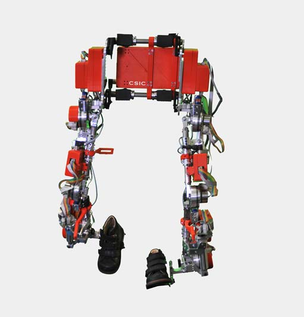
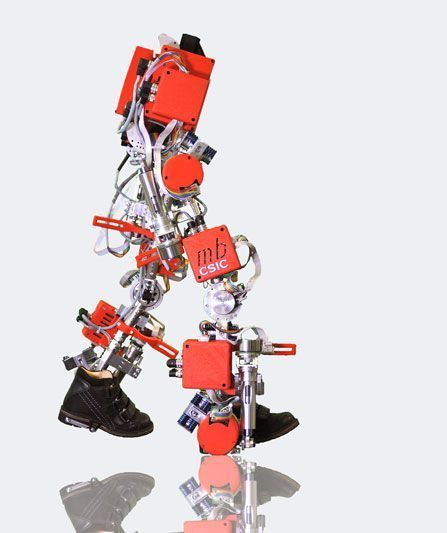

Gracias a este instrimento los niños son capaces de poder caminar y desarrollarse de forma mas facil para ellos.
La perdia de movilidad esta asociada a la invalidad que les produce la enfermedad de atrofia muscular espinal ,la cual les dificulta el poder andar. La tecnologia ha sido patentada y licenciada por la CSIC y por la empresa Marsi bionic. La CSIC presento al mundo el primer exoesqueleto dirigido para niños con atrof muscular espinal, una enfermedad degenerativa, que en España esta mas presente de lo que imaginamos llegando a afectar a una de cada diez mil personas. El dispositivo esta fabricado en aluminio y en titanio haciendolo muy resistente e intentando dotarlo de ligereza, llevandolo a los 12 kilos de peso. En muchos casos se llega a utilizar en pacientes que empiezan a caminar por primera vez, en otros casos se usa de entrenamiento para fortalecer y mantenr un buen estado. La tecnologia de la empresa CSIC ya patentada se encuentra en fase preclínica.
Estructura
La estructura se compone de unos soportes llamados ortesis, los cuales se adaptan a las piernas y al tronco del niño, ajuntandose a su altura. En las articulaciones unas especies de motores son los que ayudan a realizar la acción, intendado imitar el propio musculo humano y dandole al nilo la fuerza que nenecista. Todo esto lo completa una serie de sensores y una bateria, que dan al sistema una autonomia de 5 horas.
 Dificultad
La principal dificultad de este tipo de exoesqueletos pediatricos consiste en que este tipo de enfermedades van cambiando en el tiempo, por lo que no siempre tienen las mismas dificultades, estas varian dependiendo de como avancen en el tiempo y como se modifican, por eso es necesario que el exoesqueleto pueda modificarse, adaptarse a las necesidades de cada niño, no pueden ser todos iguales, si no que tienen que tener una adaptacion especifica. En este caso ese caso nuestro exoesqueleto tiene esta capacidad y puede adaptarse, facilitando la vida de los mas pequeños. Este instrumento va dirigido para niños de entre tres y 14 años, la edad minima esta establecida debido a la longitud minima que los niños deben de cumpir, por los motores que lleva, en concreto 5, estos en las piernas.
¿Que es?
La atrofia muscular espinal es una de las enfermedades neuronales degenerativas, siendo poco frecuente, que por desgracia produce mas muertes. Su origen es genetico y esta genera debilidad muscular paulatinamente, hacieno dificil su cura. El hecho de que no les deje caminar o moverse con facilidad hace que los niños puedan desarrolar escoliosis, osteoporosis entre algunas, incluso dificultad para respirar.
Existen disptintos tipos o grados de la enfermedad, el tipo 1, este se diagnostica a los pocos meses de vida y los niños dificilmente sobreviven a los 18 meses de vida. El tipo 2, a los pequeños que va dirigido este exoesqueleto, son del rango de entre 7 y 18 meses de vida, los cuales nunca han podido caminar. El tipo 3, son los que se diagnostican en la edad de los 18 meses en adelante, en estos casos se suelen ver presentes las consecuencias en la edad de la adolescencia. El principal objetivo del exoesqueleto es el no deteriodo del cuerpo, pudiendo ayudarles a moverse y a darles una vida mejor.